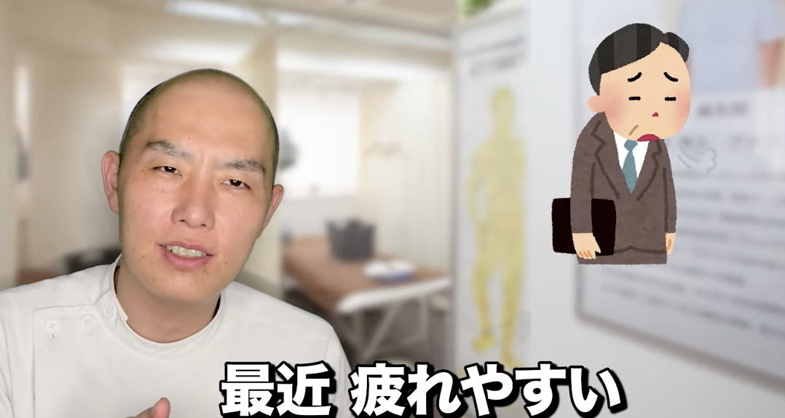
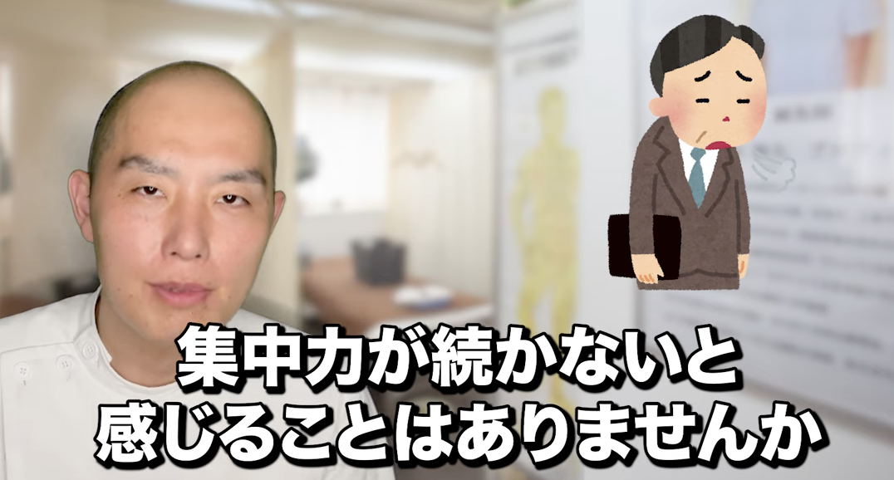
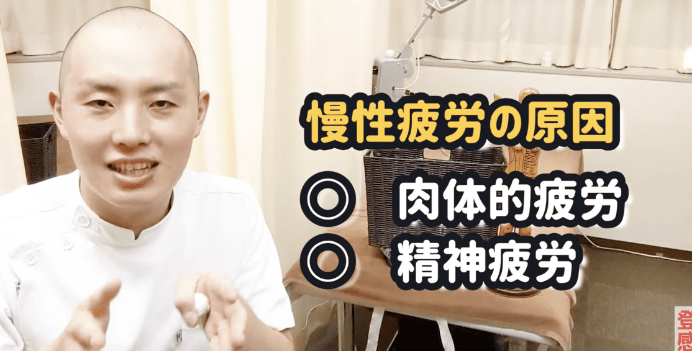
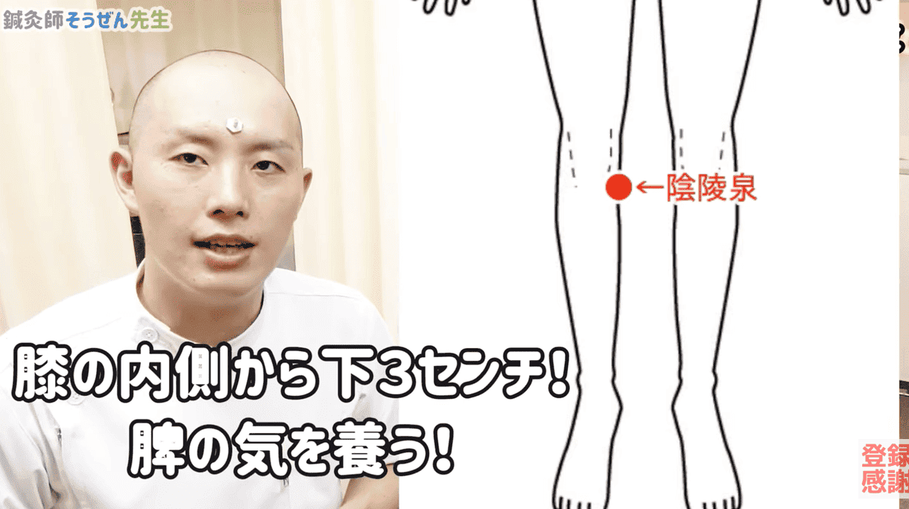
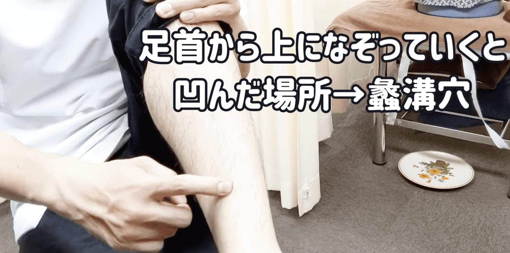
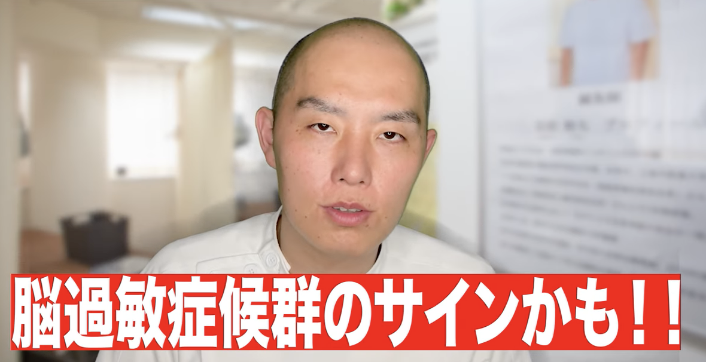

慢性疲労症候群の鍼灸
長引く極度の疲労感に対し、医療機関での評価を前提に、過度な負担を避けつつ脳血流と自律神経のバランスを段階的に整えます。
まず知っておきたい要点と施術方針
慢性疲労症候群（筋痛性脳脊髄炎）は、一般的な検査で明確な異常が見つからないにもかかわらず、日常生活に支障をきたす強い疲労感や疼痛、認知機能低下が長期間続く疾患です。ウイルス感染後の免疫変化や脳の炎症・過敏状態、自律神経や内分泌系の乱れなど多面的な要因が指摘されており、専門医による鑑別診断とペーシング等の標準的な医療管理が不可欠です。（公式解説）
このようなお悩みはありませんか？
- ✓休養しても回復しない強い疲労感が6ヶ月以上続いている
- ✓微熱・頭痛・筋肉痛・関節痛などが繰り返し現れる
- ✓思考力や集中力の低下、睡眠の質の悪化がつらい
- ✓少し無理をすると後から動けないほど体調が崩れる
当院の施術アプローチ
院長YouTube解説・関連動画
公開日：２０１９年 １２月２３日
更新日：２０２６年 １月１２日
本日は慢性疲労症候群について解説させていただきます。
銀座そうぜん鍼灸院の宗前です。
このページを書いている私は、鍼灸師として１３年、担当した利用者様数８０，０００人を誇り、病気の休職者３００人を社会復帰できるまで回復させてきた実績があります。
- •慢性疲労症候群では日常生活で長期間影響が出る
- •慢性疲労症候群が判断されるケースはほとんどない
- •慢性疲労症候群の4つのタイプ
- •慢性疲労症候群を生み出す脳過敏
- •慢性疲労症候群の回復に向けた取り組み
- •ホルモンによる不安感について
- •実際の慢性疲労性症候群の施術例
- •慢性疲労性症候群によく使われるツボ
- •当院オススメの5つのツボ

慢性疲労症候群では日常生活で長期間影響が出る
慢性疲労症候群とは、異常が認められない状況で、激しい頭痛・筋肉痛・肩こり・重度の疲労感などで日常生活がままならない状況が長期間にわたって続く病気で、その原因は明確には定義されていません。
人にもよりますが、症状は程度が重く、日常生活に支障のでる場合が圧倒的に多くをしめます。
日本人のうち、慢性疲労症候群を訴えるのは200人に1人。
肉体の免疫機能が低下し、細菌感染したことによるものなのか、精神的なダメージを追っていることでなのか、病院でもハッキリとした答えを提示されることはありません。
非常に低確率で認められますが、我慢を続けてしまうと、後にうつ病を併発する可能性の高い病気です。

慢性疲労症候群の4つのタイプ

慢性疲労症候群は肉体疲労、精神疲労から起きるため、体を見るときも関節の可動性や舌の状態や脈など広く見る必要があります。
・脾肺気虚のタイプ
過労や食生活の乱れ、病気、人を思いすぎるなどの人がなりやすく、特徴は舌を見るとボテっとしていて色が淡い赤色をしていたり舌に歯形がついていたりすることです。
・心脾両虚のタイプ
食べ過ぎ、疲労など脾肺気虚のタイプと似ていますが、体の色が白っぽい人が多いです。全体的な印象が白っぽく見える人もいます。よく夢を見る、動悸がするなどもタイプを確定する参考になります。
・腎陰虚のタイプ
性生活の方、慢性病をすでに持っている人や老化などで起こります。特徴は、耳鳴りや異常な足腰の気だるさを訴えることが多いことです。
・肝気鬱結のタイプ
ストレスが強い人や怒りっぽい人に多いです。生理不順や生理痛がひどい方にも多く、胸や脇がよく張ることもあります。特に右の肋骨あたりが張っていると感じることが多いです。
🎥 他のYouTube切り抜き・解説を読む（あと2件）▼
改善策は2つ
①虚証の改善
気を巡らせてエネルギーを回復させます。
②体の状態に応じてツボを使う
判断のためにはまず鏡で舌を見ましょう。舌の特徴は、歯形がついている、皺が多い、ボテっとしている、痩せているなどが参考になります。覚えておきましょう。
基本のベースになるツボは、関元と印堂です。
ここに3回ほどお灸をしましょう。
睡眠に問題がある場合は隠白です。
足の親指で爪の生え際の内側にあります。触って痛い場所にお灸を3回しましょう。

腰の重だるさが強い場合は腎兪です。
第2第3腰椎の横外2cmにあります。触ると凹んでいる場所に3つお灸をしましょう。
ストレスの強い人は蠡溝です。
足首から骨沿いに上にさすっていくと凹んでいる場所があります。ここにお灸をしてほしいです。

体質にあったお灸をすると体の質も変わって楽になります。押すことも良いですがお灸をすることで血流も良くなって体も変わりやすいためお勧めです。
当院にも慢性疲労症候群で来院される方は多く、脳血流障害型うつ病を併発している人が多いです。そのような方には当院では首の付け根あたりの施術を行っています。首の付け根が凝ると脳に血流が100いくところ80くらいしかいかず脳の血流障害になってしまうのです。鍼灸での血流の改善もお勧めです。
慢性疲労症候群を生み出す脳過敏

脳過敏症候群は、脳が過剰に刺激に対して強く反応する状態のことです。
この状態が続くと様々な不快な症状が現れ日常生活に大きな影響を与えます。
慢性疲労症候群が改善するかしないかははっきりしているといいますがその違いは何ですか？
慢性疲労症候群と判断されている人で当院に来院されている人は今10人くらいいます。慢性疲労性症候群は、院長の解釈ではウイルス性脳炎と見ています。コロナウイルス後遺症などもそうですが、突然脳に細菌が入って体が疲れやすくなってしまっているのです。
当院では改善した人も改善することができなかった人もいます。体の機能、脳の機能がどれだけ残存していて影響していないかが大事です。この症状は施術してもある一定のところで回復が止まってしまうことが多いです。止まる人ならまだ良いですが全く変化がない人も多いです。
多くの人はお金をかけて当院まで来院し施術したことで楽になっている気がするといってくれますが、私の中では体がどのようによくなっているのかというチェック項目があり、この項目が合格したら体が完全に変化したという判断をします。
本人のリアクションより見たもので判断するのです。良くなったと言っても体が全然変化していなければ良くなっていないという判断になります。
慢性疲労症候群の人は施術で変化させるように仕向けますが、元から変化しなければなかなか回復していきません。変化したとしても一定のラインから回復しかないパターンもあります。2時間しか動けない人が4時間や1日中動けるようになれば良いですが、ずっと2時間で止まってしまうこともあるのです。
脳や体がウイルスや細菌など何かしらの影響を受けて機能が残存している領域で回復し、傷つけられた部分は回復しないか時間薬に任せるしかないのです。
慢性疲労症候群の人へのアドバイスは回復の上限が決まっているということです。当院では、回復の上限まで行かせるために施術させていただいています。
施術をして上限までいったらそこからは体力をつけてほしいです。自分の体調の絶好調が100だとして70%しかよくならないのであれば、自分の体力を200にすれば140%まで上がることになります。
自分の体感として70%しか回復しないのであれば、体力つけて体力上限をどんどん上げて動ける体にしていくことが必要です。
100%にしようとして薬やサプリメントを飲んで自分の元も体に戻そうというのはあまりお勧めできません。
鍼灸の現実としては施術して70%まで回復して施術を続けても70%から上がらない場合、薬を飲んだり違う方法を試したり違うサプリメントを飲んだりというような違うことを行い、調子が悪くなる人がたくさんいます。
何かよくしたいと思って頑張るのは悪くないですが、良くなったのに色々試して悪化して、施術して少し良くなってまた色々試して悪化してということを繰り返すパターンが多いのです。これは、慢性疲労症候群、インフルエンザの後遺症、コロナの後遺症、ワクチンの副反応全体で言えることです。
当院でも、色々試して悪くなり、また施術してまた良くなりますがそれも７〜８割で止まり、また色々試してまた悪化するというのを何回も試している人もいます。
施術者側としては回復上限が決まっているためそこまでは安定させます。そこからはクラッシュやぶり返しを起こさないように体力をつけて自分の体力の上限を引き上げていくようにというアドバイスを行っています。
薬を飲んで100%になった人もたくさんいると思いますが私は懐疑的に見ています。これは鍼灸だけで100%までいく人もいるためです。改善すれば他にものに手を出すこともなく何もしません。
いろいろな情報を集めるにあたって、これやったから良くなった、この薬で良くなった、という人もいますが、飲んでいる時点で改善していないと思います。改善したら何もやらなくなります。当院ではそれが改善したということであると考えています。
回復の上限を知ることが大事なのです。そこまでいったら体力の底上げをしましょう。これが慢性疲労症候群の回復の1番の近道であると当院では考えています。
当院オススメの5つのツボ
東洋医学ではツボは体のセンサーです。ツボを押した時の痛みが出るのはその場所とつながっている内臓や神経が疲れているサインです。
胃の働きが落ちると鳩尾や背中に反応が出ます。ストレスで交感神経が過敏になると、胃や首が痛くなります。ツボの痛みは悪いものではなく体が休ませてくれと伝えているサインなのです。
おへそと鳩尾の真ん中にあるツボです。乳首の真ん中からおへそを繋ぐ線の中でちょうどお腹が膨らんでいる頂点にあります。
ここは、胃と深くつながる場所で、食べ過ぎた時やストレスで食欲が乱れている時、ここを押すと響くような痛みがあります。これは胃の粘膜や神経が疲れているサインで、消化が追いつかず胃の働きが鈍くなっている状態です。
機能性ディスペプシアといい、胃に異常はないのに胃の辛さや不快感、鈍痛がある人の多くは中脘を押すと痛みを感じます。
そういう人は、冷たいものを控えて胃に優しい時間を作ってほしいです。胃は穏やかに過ごすと静かに整っていきます。中脘は胃の状態を示すわかりやすいポイントで、胃に問題がなければ押しても問題ありませんが、調子が悪い人は重くて押されたくないと思う場所なのです。
乳首から下に２cm下がっていき内側に触れていくと肋骨と肋骨の間に異常に痛いポイントがあります。
期門は肝臓のストレスに効果的なツボで、肝臓と深くつながる肝臓の鏡のようなツボです。ストレスや食生活の乱れ、多量の飲酒によって肝臓の負荷が高まり、血液を調べた時ALT、AST、γGTPの数値が上がっている人はここを押すと異常に痛いはずです。肝臓の負荷が高まることでその周りの筋肉神経が過剰に興奮し軽く押しただけでも異常に痛く感じるのです。
研究でも肝炎を持つ人は健康な人に比べて期門に強い圧があると報告されています。肋骨のところが痛かったりくすぐったかったりするのは筋肉的な問題だけではなく、体の奥の内臓が頑張りすぎているサインなのです。
期門を押すと痛い人はお酒をやめてストレスを感じるような環境は下げましょう。ゆっくりお風呂に使って期門周辺を温めることで肝臓の状態は変わります。当院でも、γGPTが高い人にはお灸をしています。実際に数値が下がっている報告もあります。
手首の内側の手のひら側にあるツボです。手首を曲げて小指側に腱があり、腱より少し内側にあります。
気持ちが疲れている人は軽く押すと結構痛いはずです。神門は心の疲れを示すツボで、心臓と自律神経のバランスを移す重要な場所です。強いストレスを抱えている時、ここを押すと指すような痛みやしこりを感じます。実際に神門へのお灸が心拍変動を整えて副交感神経を回復させた臨床方向もあります。
無理をしている心は言葉ではなく手首の痛みを通して語りかけてくれます。そんな時は深呼吸をしましょう。鼻から3秒吸ってゆっくり5秒かけて吐き、その後に神門のツボを押してほしいです。程よい刺激が心を安心させてくれるはずです。
手首を曲げたときにできる関節のシワの小指は輪にある骨の上にある僅かなくぼみを手の骨側に向かってグーと押すと痛みがあります。ストレスも疲れもないと痛くないですが少し疲れた時はジーンとした痛みがあります。そういう時は無理せずゆっくり休むのはもちろんですが、深呼吸をしてツボを押したら必ず副交感神経が優位になります。
肘を曲げたときにできる肘のシワの外側にあります。
首、肩こりの緊張はもちろん食いしばりと深い関係があり、寝ている間に歯を噛み締めている人や無意識に顎に力が入っている人は軽く押すだけで痛みがあります。これは顔の咬筋や側頭筋の過緊張を通じて自律神経が疲れているサインなのです。
曲池をほぐすと首やこめかみの重さが少し軽くなります。顎周りや頭の側面が重いと感じる時は体が今日も1日頑張ってくれたと優しく受け止めて曲池を押してほしいです。
肘を曲げてできる小シワの腕の外側端あたりを人さし指や親指で押すと非常に痛いポイントがあります。押すだけではなくピップエレキバンやシールの鍼、お灸でも構いません。痛いですが体はリラックスしますので試してみてほしいです。
小指の外側で、付け根の膨らみの下あたりにあります。手を握って小指の付け根の関節の骨のでっぱりの少し下にあるしわの部分です。
頭がぼーっとする、思考がまとまらない、朝起きてスッキリしないときにオススメのツボです。首の深い筋肉と連動していて脳への血流を整える働きもあります。ここを押して痛い時は脳が酸欠状態になっています。スマホやパソコンの見過ぎ、浅い呼吸が続いているサインです。
後谿は、鍼灸の現場ではぎっくり首や寝違いにも使われるツボです。昔から使われる効果の高いツボなので、ゆっくり息を吐きながら押してほしいです。押すと首が軽くなる感覚があります。これが体がリセットされる瞬間です。
このツボは、右首が辛い人は左に反応が出やすく、左が辛い人は右に反応が出やすいという特徴があります。
押す時は、痛気持ちいいがポイントです。強く押しすぎると体が興奮してしまうため10秒押して3秒休むのを3セット行いましょう。押す時間はお風呂上がりでも寝る前でも心が休まる時間が理想です。
1番大切なのは痛みを敵としないことです。痛みは体のメッセージです。その声を無視せず、ありがとうと返すように押すことでその刺激や優しさに応えてくれます。
忙しい日々の中で自分の体に優しく触れる時間を作ってあげましょう。その習慣があなたの心と体をゆっくり整えてくれるはずです。
人気ページ
自律神経のお悩みのツボ図解とセルフケア
実際の施術ではお一人おひとりの体質・症状に合わせて選穴しますが、自律神経調整（心拍変動HRV・迷走神経・睡眠/ストレスケア）の臨床でよく用いられる代表的なツボの目安です。

📌 代表的なツボの詳細一覧表を開く（6穴） ▼
| ツボ名 | 位置の目安 | 主な狙い | セルフケアの注意点 |
|---|---|---|---|
| 曲池（きょくち） | 肘を曲げた外側のシワ先端 | 交感神経の過緊張リセット、上肢・頭部の熱感緩和 | 痛気持ちいい強さで10秒ほど。しびれが出たら弱める |
| 風池（ふうち） | 後頭骨下縁、耳後ろの骨の内側くぼみ | 頸部筋緊張・頭痛・めまい・眼精疲労の自律神経ケア | 頸動脈側へずらさず斜め内側へ優しく |
| 内関（ないかん） | 手首内側横ジワから肘側へ指3本分、2腱の間 | 動悸・息苦しさ・吐き気・胃腸不調の緩和 | 衣類の上からのカイロ温熱や軽い指圧が安全 |
| 百会（ひゃくえ） | 両耳上端を結ぶ線と正中線の交点 | 頭重感・不眠・精神的緊張・のぼせの調整 | 中指腹で心地よく数秒。頭痛増悪時は中止 |
| 角孫（かくそん） | 耳を前に折ったとき先端が側頭部に当たる位置 | 側頭部の循環改善、締め付け頭痛・だるさ緩和 | 吐く息に合わせじわっと圧迫（強揉み回避） |
| 三陰交（さんいんこう） | 内くるぶし頂点から指4本分上、すね骨の後ろ際 | 冷え・ホルモンバランス・睡眠の質改善 | 妊娠中の強い刺激・お灸は禁忌 |
国際査読論文の科学的エビデンス
国際的な医学データベース（PubMed・Cochrane等）で報告されている自律神経調整（心拍変動HRV・迷走神経・睡眠/ストレスケア）領域の代表的な査読済み鍼灸研究をまとめています（標準治療との併用や研究上の限界を含めて正確に掲載）。
📚 査読論文データ・PubMed出典リンクを開く（4件） ▼
| 年・研究デザイン | 対象・規模 | 主な結果 | 限界・出典 |
|---|---|---|---|
| 2025年 メタ解析 | 自律神経不調を伴う疾患 10 RCTs（n=744） | 全体適応力指標SDNNが有意改善（MD 13.59, p=0.0091）、重篤な有害事象ゼロ。 | LF・HF・LF/HFは有意差なし、異質性高。 Front Neurosci (PMID: 41230507) |
| 2023年 メタ解析 | 手技鍼 vs シャム鍼 9 RCTs | 実鍼群でのみ施術前後の副交感神経指標HFおよびLF/HF比が有意変化。 | 一次研究の質・異質性にばらつきあり。 Complement Ther Med (PMID: 36494036) |
| 2024年 RCT | 食後愁訴症候群（PDS）解析51名 | 症状反応率（p=0.001）、迷走神経活性HF上昇（p≤0.001）、LF/HF低下（p≤0.001）。 | 単施設・小規模（脳腸相関の根拠）。 Chin Med (PMID: 39568071) |
| 2022年 国内RCT | 更年期女性 48名（日本式鍼7穴×4週） | 鍼群の79%で心拍数が5%以上低下（P<0.01）、鍼中のHF上昇・起立時LF/HF低下を確認。 | 更年期女性限定・4週間の短期評価。 Med Acupunct (PMID: 36311889) |
参考文献・出典
- 銀座そうぜん鍼灸院「慢性疲労症候群の公式解説ページ」
- 2025年 メタ解析（自律神経不調を伴う疾患 10 RCTs（n=744））— Front Neurosci (PMID: 41230507)
- 2023年 メタ解析（手技鍼 vs シャム鍼 9 RCTs）— Complement Ther Med (PMID: 36494036)
- 2024年 RCT（食後愁訴症候群（PDS）解析51名）— Chin Med (PMID: 39568071)
- 2022年 国内RCT（更年期女性 48名（日本式鍼7穴×4週））— Med Acupunct (PMID: 36311889)
よくある質問（FAQ）
Q. 外出も困難なほど強い倦怠感がある時期でも通院できますか？▼
Q. どのようなツボや施術を用いますか？▼
あわせて読まれる関連疾患（自律神経のお悩み）
入眠困難や中途覚醒などが続き日中の不調を招く状態です。自律神経の過緊張を鎮め、心身が休息しやすい環境を補完的に整えます。
検査で明確な異常が見つからないのに多彩な自覚症状が続く状態。医療機関での除外診断を前提に、自律神経と深層筋の緊張を整えます。
ストレスや過労から心身に多彩な不調が現れる状態。必要に応じた専門医受診を前提に、自律神経と睡眠の質を整える補完ケアを行います。
持続する抑うつ気分と多彩な身体症状を伴ううつ病。精神科の標準治療と十分な休養を最優先に、自律神経と身体の不調を補完的に整えます。
長く続く抑うつ感や疲れやすさに対し、専門医の標準治療を前提に、血流と自律神経のバランスを整えて日々の生活を支えます。
生まれつき全身の痛覚・温度覚が欠如し発汗も低下する指定難病。専門医の安全管理を絶対最優先とし、火傷・外傷リスクに厳重配慮します。
おひとりで悩まず、まずはご相談ください
銀座本院・川口・大宮・横浜・博多・田無の各院でご予約を承っております。